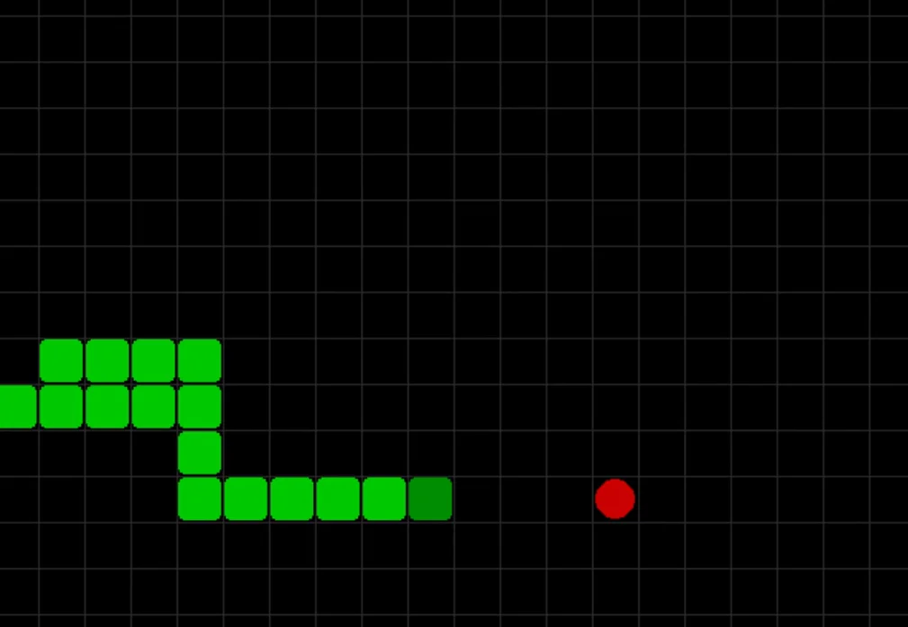

Reinforcement Learning Snake Agent
Training agents to master Snake from nothing but a reward signal: no labeled data, no human demonstrations.

Overview
Snake is a deceptively hard reinforcement learning benchmark: the agent starts with no notion of "food," "wall," or "self-collision." It sees only a grid of pixels and a score. This project builds that understanding from scratch, comparing two very different RL algorithms, a custom Deep Q-Network and Proximal Policy Optimization, against each other on the same environment.
The Problem
Off-the-shelf Gymnasium environments don't include Snake, so the first task was building one: grid state representation, collision detection, food spawning, and a reward function, all of which directly determine whether an agent can learn anything useful at all. A poorly shaped reward signal (e.g. rewarding survival time alone) trains an agent that avoids food entirely, since dying ends the episode and stalling doesn't.
Architecture & Approach
Built a custom Gymnasium environment exposing the grid as an observation space, then trained two families of agents against it:
- Custom DQN: implemented from scratch in PyTorch with experience replay and a separate target network to stabilize Q-value updates.
- PPO: via Stable-Baselines3, using a clipped surrogate objective for more stable policy updates than vanilla policy gradient methods.
The most important variable turned out not to be the algorithm, but the reward shaping. Three strategies were tested head-to-head:
The sparse reward struggled to bootstrap any learning signal in a reasonable number of episodes. With no intermediate feedback, most early trajectories end in random death long before the agent stumbles onto food by chance. Adding a small per-step penalty plus a distance-to-food shaping term gave the agent something to climb even before it had ever found food.
Results
PPO agents trained with the shaped reward surpassed the 15-pellet success threshold and peaked around 46 pellets in a single episode, well beyond what the DQN implementation reached under the same training budget, likely due to PPO's more stable updates on a reward landscape this noisy.
What I'd Do Differently
- Add frame-stacking or a small recurrent layer. A single-frame observation gives the agent no sense of its own momentum, which likely capped how far reward shaping alone could take it.
- Run a proper hyperparameter sweep instead of manual tuning. The reward-shaping comparison ate most of the compute budget for this pass.